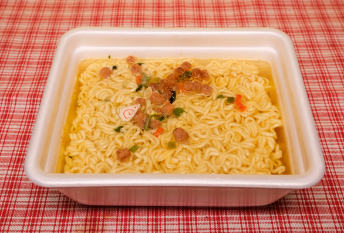

THE TOP 9 CANCER CAUSING FOODS THAT WE ALL EAT REGULARLY

Most of us don’t question the safety of the foods we eat…
Although we have heard that some foods may be particularly unhealthy, we assume that the government has set standards that protect us from the ones that cause cancer.
Despite the fact that scientists agree that many foods and food additives are likely cancer-causing… they can’t be conclusively proven to cause cancer via a clinical double-blind test.
Therefore, lots of dangerous foods are labelled ‘safe’. Not because they have been proven to be safe, but because they can’t be proven not to be safe.
This hollow safety loophole has allowed a plethora of suspected cancer-causing foods into our grocery isles.
You would think that a suspected carcinogen would be enough for it to be banned or regulated. But if a large corporate entity is making enough money using a particular ingredient or chemical, they will use all their influences and political resources to continue using it…
When you see companies like Monsanto getting away with murder, you get a glimpse of how much power these giant corporations really have.
The good news is that there is usually an alternative you can opt for, greatly reducing your exposure levels to these cancer-causing toxins.
1. Hot Food Served in a Plastic Bag or Container

Plastic containers are a cheap and easy way to serve, store and deliver food. But most people don’t know that these plastics contain Bisphenol A (BPA), a cancer-causing chemical that, once ingested, mimics estrogen in our bodies.
These synthesized estrogens are called “xeno-estrogens” (“xeno” meaning foreign). This chemical is responsible for hormone related cancers – notably breast and prostate cancer.
Styrofoam (also known as polystyrene) is just as bad. When they come into contact with warm food or drink, polystyrene food containers leach the toxins Styrene and Benzene (both suspected carcinogens, and known neurotoxins).
The Scientific American reported that hot food served in heated plastic containers absorbs chemicals 55 times faster than room temperature containers.
So avoid buying hot food served with plastic, never microwave food with plastic and never pour hot liquid into a plastic container.
Don’t be fooled into using ‘microwave safe’ plastics as it only means that your container won’t warp from the heat.
Beware of cheap plastic water bottles. You may think that refilling your bottle of evian is a cost-savvy and environmentally conscious idea. But these bottles are designed for one-use-only… so constant use will expose your water to higher concentrations of BPA over time. This is especially true if you leave the bottle to warm in the sunlight.
2. Unnatural Cooking Oils
Unnatural cooking oils are oils that have been chemically removed from their source.
In most cases the chemical process causes the oil to stink, so they have to be deodorized and then colored to be more appealing to consumers.
Chemically produced oils contain high levels of Omega–6 fatty acids. An excess of Omega- 6 fatty acids is a leading cause of heart disease and an increase in various other cancers, especially skin cancer.
Many of these unnatural oils contain trans-fats, but don’t be fooled into thinking that trans-fat free oils like rice-bran oil are healthier… if you want to consume healthy oils, choose the ones that are cold pressed such as extra-virgin olive oil, avocado oil or coconut oil.
Although many people still subscribe to the outdated idea that ‘all fat is bad’, natural fats – even animal fats are far healthier than chemically produced oils.
People who follow the Paleo diet or Keto diet use duck fat or ghee as an alternative to fry at high temperatures. The French have been using it for centuries, and they have far lower rates of obesity and heart disease than the rest of the western world.
3. Artificial Sweeteners
Everyone knows that soda pop is bad for us, so it makes sense to opt for the sugar-free versions – right?
Unfortunately, nearly all diet sodas contain artificial sweeteners that contain the toxic chemical – aspartame.
Aspartame was originally approved on July 26, 1974, but objections filed by neuroscience researcher Dr. John W. Olney and Consumer attorney James Turner, as well as investigations of G.D. Searle’s research caused the FDA to put aspartame approval on hold.
But In 1985, Monsanto purchased G.D. Searle and made Searle Pharmaceuticals and The NutraSweet Company separate subsidiaries. Then all of a sudden aspartame was approved (funny that).
Aspartame is linked to a long list of health dangers such as, diabetes, epilepsy, emotional disorders and birth defects, but most alarming is links to brain cancer.
4. Canned Food
Some of us already know that canned foods are bad for our health. But some canned foods are so darn convenient…
Canned fruits like peaches or pineapple, which are not only cheap and delicious, but they keep in your pantry for as long as you need them. And for anyone who likes to cook Italian, there are always a couple of tins of canned tomatoes sitting on their shelf.
Unfortunately, the health benefits of these fruits have been outweighed by the health dangers.
The problem is that nearly all cans are lined with a chemical called bisphenol-A (BPA).
According to the US National Library of Medicine, BPA has been shown to play a role in the pathogenesis of several endocrine disorders. Including female and male infertility, brain and behavior problems, precocious puberty, hormone-dependent tumors such as breast and prostate cancer and several metabolic disorders including polycystic ovary syndrome (PCOS).
5. Potato Chips
You’re probably thinking, “how can potato chips cause cancer”?
Most potato chips contain acrylamide, a known carcinogen (also found in cigarettes).
Unfortunately, this insidious chemical is found in many other highly processed foods such as cookies, cereals, bread and crackers.
But potato chips are found to be particularly hazardous… so-much-so that the state of California sued potato chip manufacturers for not issuing a warning to consumers about the possible health risks.
So In 2008, potato chip companies lowered the levels of acrylamide just enough to get away with not having to add a warning sticker.
6. Microwave Popcorn
It’s not popcorn that is carcinogenic, it’s the convenient bags they are microwaved in that’s the problem.
Microwavable popcorn bags are lined with a toxic chemical called perfluorooctanoic acid (PFOA). This harmful toxin is also found in Teflon (a good reason to never buy a cheap Teflon fry pan).
The U.S. EPA (2005) concluded that evidence was suggestive that PFOA is carcinogenic in humans.
In its review of that risk assessment, three of the four members of the EPA scientific advisory board concluded more strongly that PFOA was “likely to be carcinogenic in humans”
7. Farmed Salmon
Many people who eat salmon think they are eating healthy, but scientists have revealed that eating farmed salmon heightens the risk of cancer.
Wild caught salmon is different… but unfortunately, 95% of salmon served in restaurants and supermarkets is farmed salmon.
The reason why farmed salmon is considered bad for your health is because of the conditions they are raised in.
Because these poor fish are cramped up in such small pens, disease and sea lice becomes a big problem… so farmers feed them antibiotics and pesticides.
The food pellets that farmed salmon are fed is unnatural – which turns the flesh a gray color. The natural red color that wild salmon have is because of a certain type of krill they eat.
So farmers combat this problem by feeding their salmon chemicals to give the flesh a pink pigment.
Chemicals found in farmed salmon contain a wide range of dangerous industrial pollutants. These include poisonous pesticides, cancer-causing PCBs (polychlorinated biphenyls), dioxins, dieldrin and toxaphene… as well as hormone-disrupting chemicals known as PBDEs (polybrominated diphenyl ethers).
8. Highly Processed White Flours, Refined Sugars
Although we have all heard that white flour is bad for us, not many of us know why.
Traditionally, flour is left to whiten over time, but these days flour mills take a shortcut and choose to bleach the flour with chlorine gas.
Like all carbohydrates, once eaten, the body turns the flour into sugar (for fuel). White flour has a very high glycemic rate which means once ingested, white flour is converted into more sugar than eating sugar itself.
Over time, high blood sugar levels trigger insulin resistance… which causes diabetes, obesity, and heart disease.
Cancer (as well as Alzheimer’s disease) loves to feed on sugar. This is why sugar and refined flour is so dangerous.
9. Non-Organic Fruits & Vegetables
Most of us are aware of the toxic pesticides that farmers spray on their fruit and vegetables to make their living more profitable.
But the alternative – organic fruit and vegetables are expensive. This is why most people ignore the risks of non-organic produce.
Many pesticides are carcinogenic, (e.g., organochlorines, creosote, and sulfallate) while others (notably, the organochlorines DDT, chlordane, and lindane) are tumor promoters.
Let’s face it unless we get a decent pay rise – we’re probably going to continue to eat non-organic.
But let’s look at the worst offenders. So we can be conscious about it and possibly make some different choices in the future… or at least wash our fruit and veg more rigorously.
Apples – Found to have the residue of 45 different pesticides
Strawberries & Blueberries – Up to 50 different pesticides
Grapes – You may think twice about pinching a grape while shopping as they can be covered with up to 50 different pesticides.
Celery – A bad offender, with up to 60 different pesticides.
Peaches – Another terrible offender with up to 60 different pesticides.
Spinach & Lettuce – Be sure to wash before eating as it can contain up to 50 different pesticides
Bell Peppers (Capsicum) – Covered in up to 50 different pesticides
Cucumbers – Be sure to peel the skin before eating as cucumbers are covered with a whopping 80 different pesticides.
So there you have it.
It’s a shame that the cancer foundation hasn’t made an effort to educate the public of these dangers.
But on the bright side, there is usually a healthy alternative to each of these danger foods. And at the very least, practice eating them in moderation.